Components
ScriptableObjects
Plain C# Classes
Entity (Abstract) : MonoBehaviour
What is an Entity?
An Entity is an abstract base class that inherits from MonBehaviour. It is the base class for Agent, World Object, and Agent Event.
Entity Base Custom Inspector
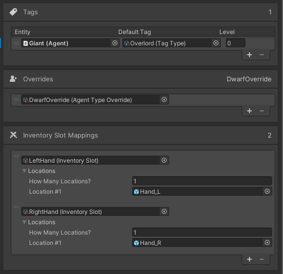
Entity Type Info
All of the major parts of an Agent are defined here. All of these and more can be overriden by using Agent Override Types.
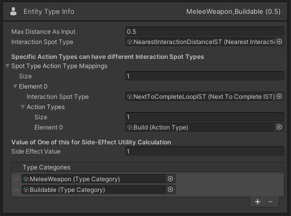| See Movement Type. | |
| Default Animation Type | See Animation Type. |
| Use Animator Overrides |
Should this Agent use the Animator Overrides feature? It dynamically changes the Animator Override Controller
based on InputConditions. See Animator Overrides below. |
| Idle Layer | Integer for the layer that the Idle State is located on in the Animator. |
Prefab Variants
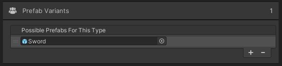
| Order of DriveTypes does not matter. See Drive Type. | |
| Level | The Agent will start the game with the Drive set to this level. |
| The default change in drive level per game hour. The length of a game hour is set in the Scene's TimeManager. |
Placement Info
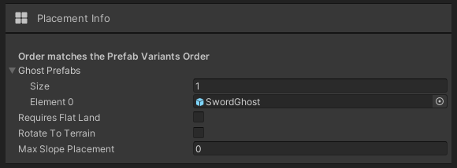
| Order of Action Types does not matter. See Action Type. |
|
| Level | The Agent will start the game with the Action set to this level. An Action level or skill can be used as a measure of how good the Agent is at the Action Type. |
| Prob | The default probablity of the Action level increasing after the Agent performs this Action Type. |
| The default change amount in the Action level if the Action level increases. |
Tags
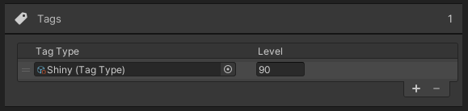
| Order of Attribute Types does not matter. See Attribute Type. |
|
| Value | The Agent will start the game with the Attribute Type set to this value. |
| Range | For MinMaxFloatATs this is the min and max values. |
Inventory
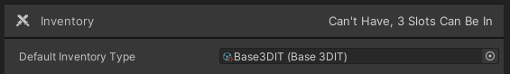
| An Inventory Type defines all of the key logic for how inventory should work. TAI currently includes 3D and 2D Base Inventory Types. |
Inventory - Can Be In Slots
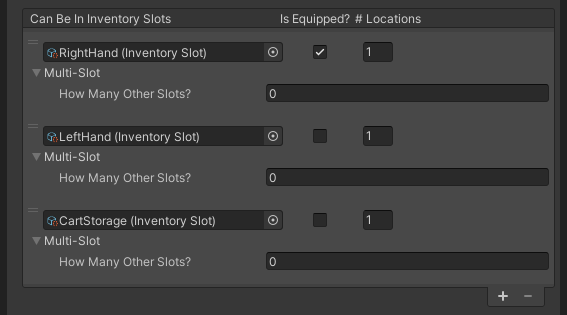
| See Inventory Slot. | |
| Is Equipped? | If the entity is in this slot is it considered to be Equipped? Item Conditions use this status to apply modifiers. |
| # Locations | How many of the slot locations are taken up by this Entity? Inventory Slots can be multi-location. |
| Multi-Slot | This allows Entities to take up multiple slots. For example, a two handed sword would take up Right Hand and Left Hand Slots. |
Inventory - Transform Mappings
A Transform Mapping will change the transform (position, rotation, and scale) of an Entity when it is in a certain inventory slot. Order does matter as it will choose the first match. If there is no match the Prefab Variant's transform be used.
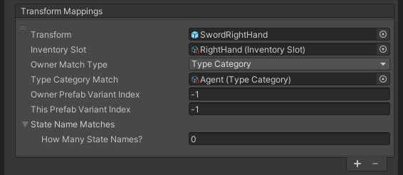| Transform | An Empty Game Object Prefab with just a Transform. When the entity becomes inventory and the following conditions are met the Entity's transform values will be replaced by this one. |
| Inventory Slot | See Inventory Slot. |
| Type Group, Type Category, or Entity Type: Which one of these three should be used to match on? | |
| Type Match | Will show one of these three fields, Type Group, Type Category, or Entity Type, based on the Owner Match Type. |
| Owner Prefab Variant Index |
Does the owner have to be of a certain Prefab Variant index? -1 to ignore. |
| This Prefab Variant Index |
Does this Entity have to be of a certain Prefab Variant index? -1 to ignore. |
| State Name Matches | Does this Entity need to be in certain states? Only for World Objects. Leave list empty to ignore. |
Inventory - Attribute Type Modifiers
Use these to have inventory modify attribute Types for an Action or at all times if Item Condition passes.
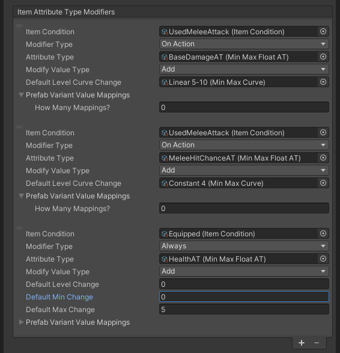| Item Condition |
A set of conditions that must be true for the Modifier to be applied.
See Item Condition. |
| Modifier Type | On Action or Always: Does the modifier only apply when an Action is occuring? If Always, the Attribute Types min, max, and level can be changed. If On Action, A MinMaxCurve is used so a random range can be used to change the Attribute Types level just for that Action. |
| Attribute Type | See Attribute Type. |
| Modify Value Type | Add, Multiply, Override, or Veto: How should the value be modified? Override will replace the value but continue looking at modifiers. Veto will return the value. |
| Default Level Curve Change |
For On Action Modifier Type. Will randomly evaluate the Min Max Curve to get the change value.
See Min Max Curve. |
| For Always Modifier Type. A float value to change the level of the Attribute. | |
| Default Min Change | For Always Modifier Type. A float value to change the min of the Attribute. |
| Default Max Change | For Always Modifier Type. A float value to change the max of the Attribute. |
| Prefab Variant Value Mappings | Same as above but specific to a Prefab Variant. Use these to override the default modifier values. |
Inventory - Action Skill Modifiers
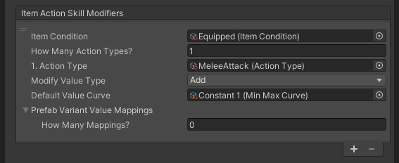
| Item Condition |
A set of conditions that must be true for the Modifier to be applied.
See Item Condition. |
| Action Types | Which Action Types to modify? See Action. |
| Modify Value Type | Add, Multiply, Override, or Veto: How should the value be modified? Override will replace the value but continue looking at modifiers. Veto will return the value. |
|
Will randomly evaluate the Min Max Curve to get the change value for the Action.
See Min Max Curve. |
|
| Prefab Variant Value Mappings | Same as above but specific to a Prefab Variant. Use these to override the default modifier values. |
Inventory - Effects
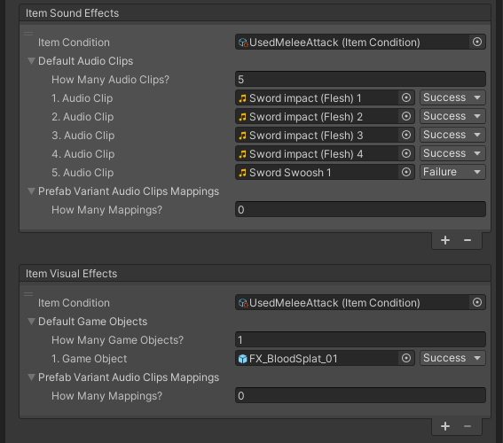
Inventory - Slots & Default
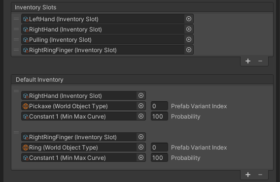
Entity Modifiers

|
List of Entity Modifiers. Will evaluate them in order if multiple trigger at the same time.
See Entity Modifier. |